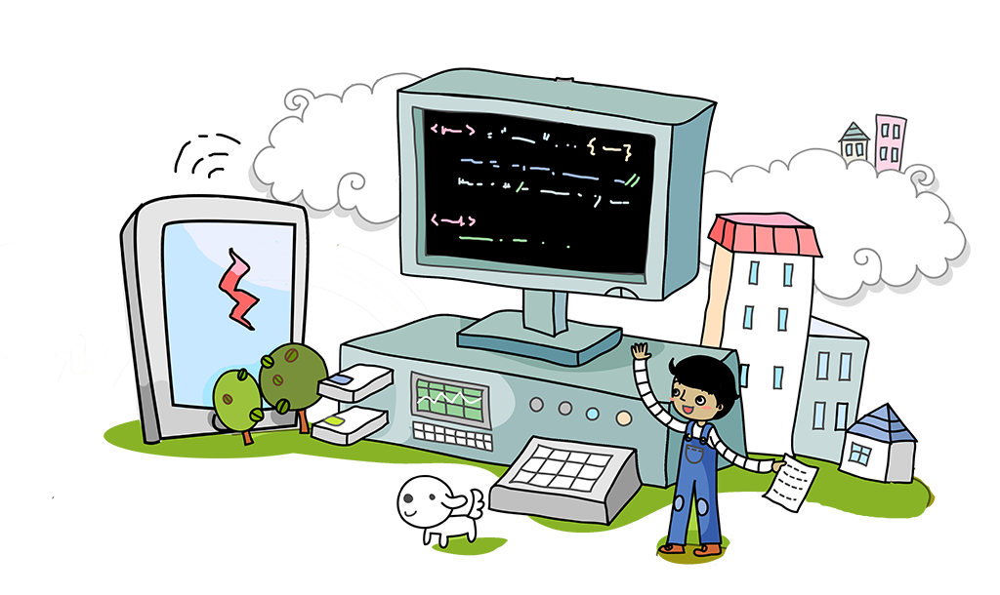
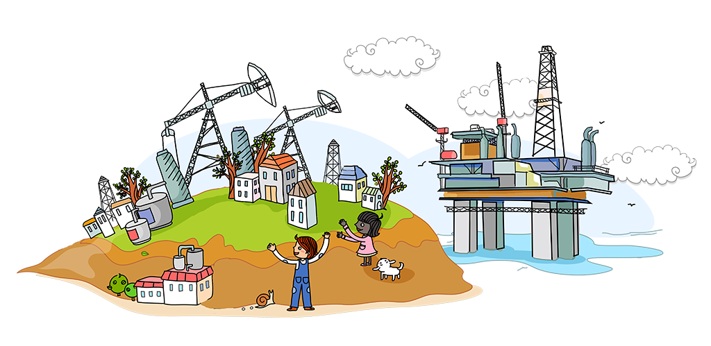
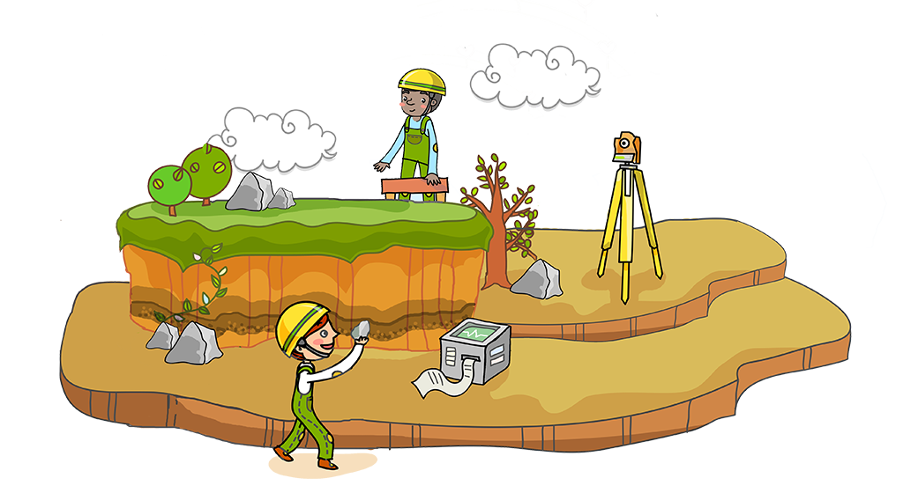
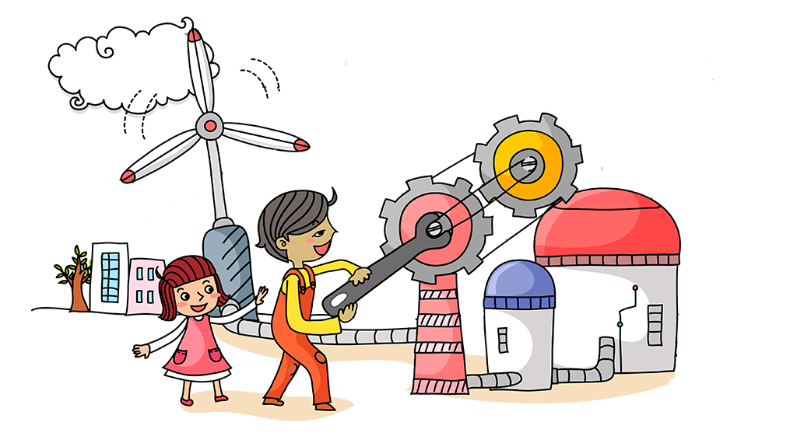
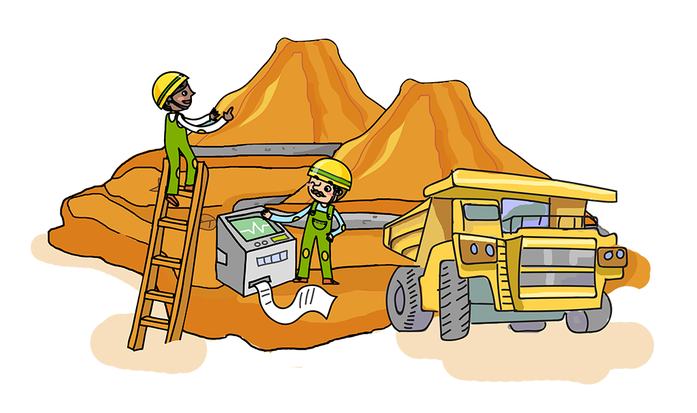
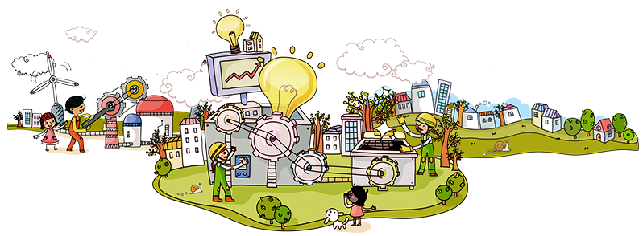

Hello friends Akhil here and in this git file I shaw you
some of my work which I will done in my acadamic.
here I use my creativity for change cursor proparty for color changing.
I put image for more better representation so injoy it.






Please note here I use photos which all are available on web, I only put it here.